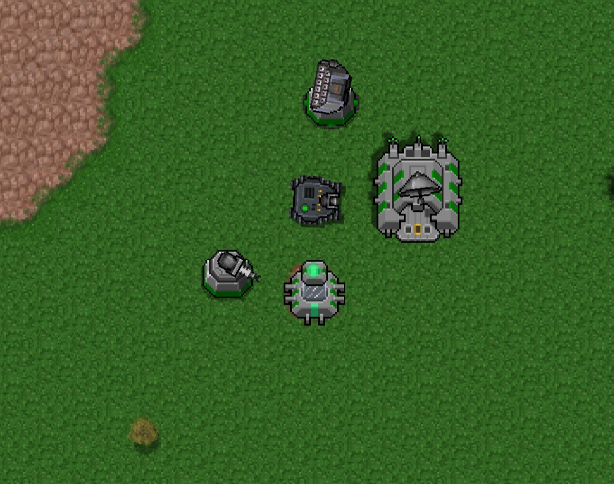
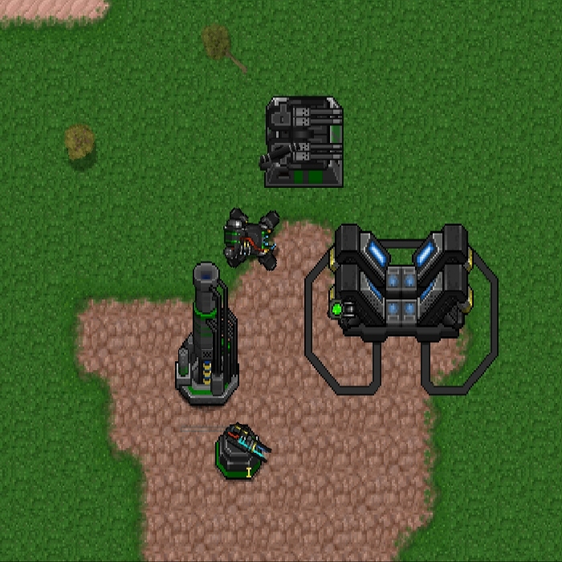
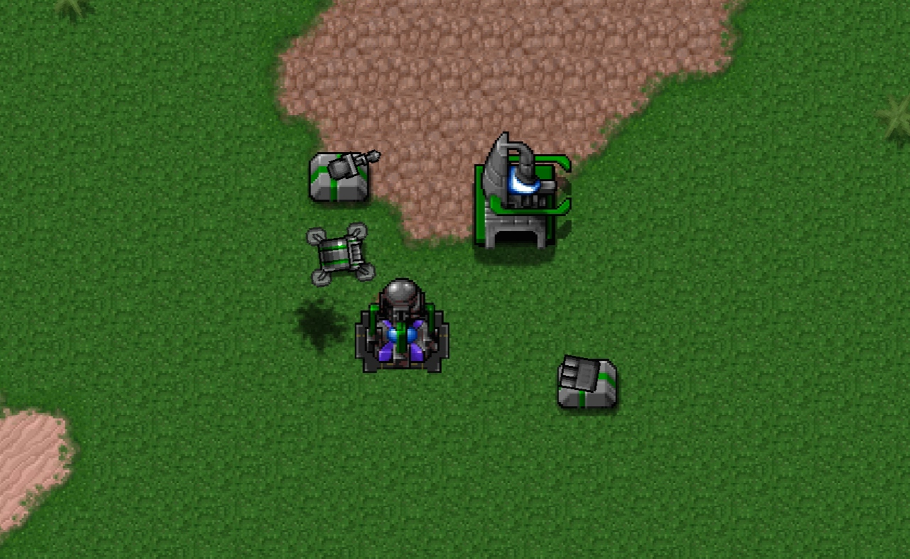

AEA+ fandom Wiki
спа́м закидайте его спамом в личку он плохой
о моде AEA+ (пак Аддон АЕА) мод для игры Rusted Warfare
неодходимая версия игры 1.15 доступен на платформах android ,window, калькулятор
скачать можно здесь или в телеграм канале разработчика
Внутриигровое описание
в моде присутствует подробное описание юнитов в котором находятся частички Лора который есть в моде
само описание мода:AEA. Корпорация Black Guard. EK Engineering. Эти фракции сталкиваются в тотальной битве за абсолютное господство над
100 мирами. Кто одержит победу над всеми? Выбирайте свою фракцию с умом, рекрут, война только началась. (Объем оперативной памяти: 1418,90
Мб)
фракции в игре присутствуют 3 уникальных фракции со своими особенностями
уникальными механиками и текстурами
мки

ВГО

ВЭА

описание фракций
ВГО/BGC
основные механики
в моде присутствует много игровых механик в принципе, в оригинальной игре их было тоже не малоло
валюты
самая основная валюта это ресурсы „$“
↑
GitHub